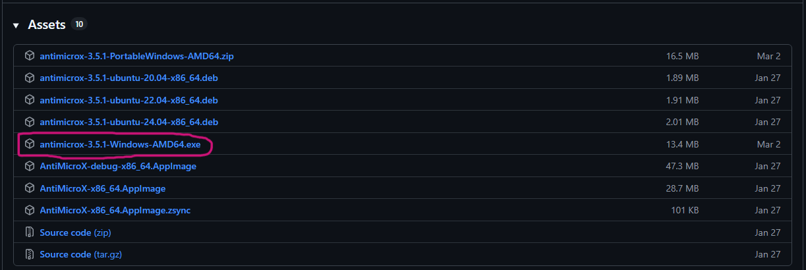
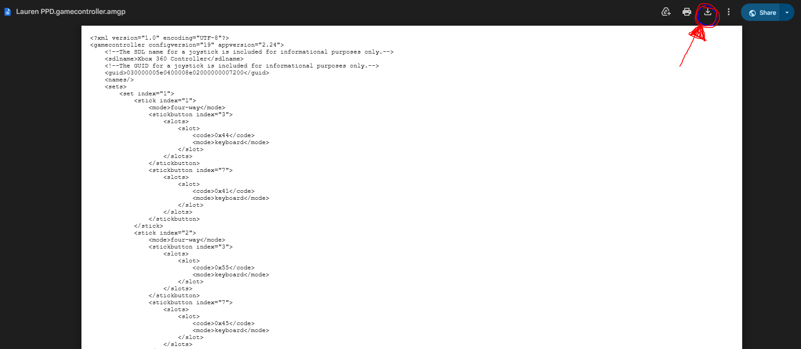
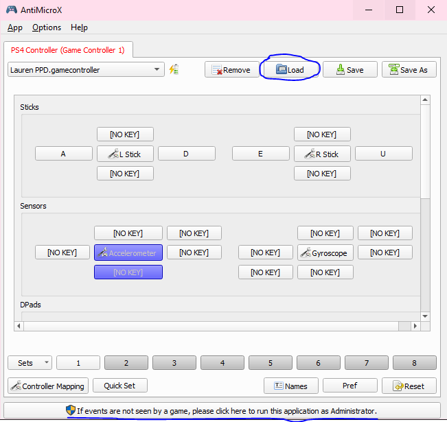
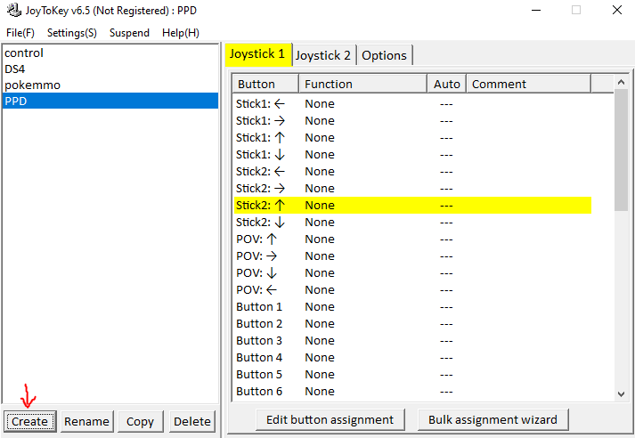
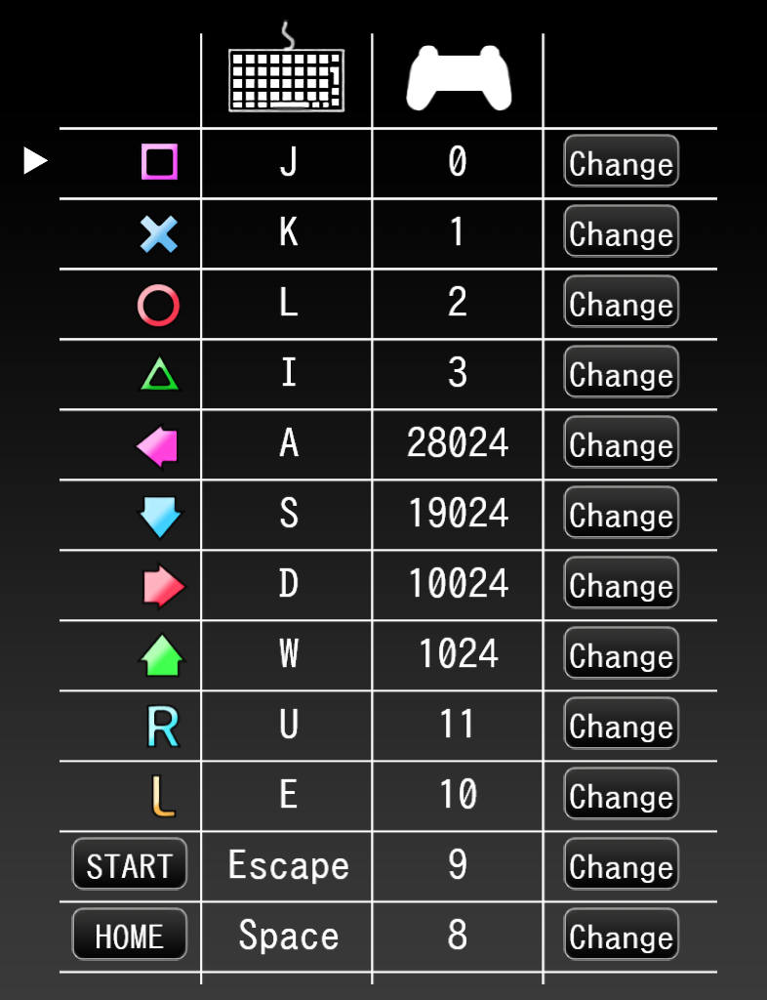
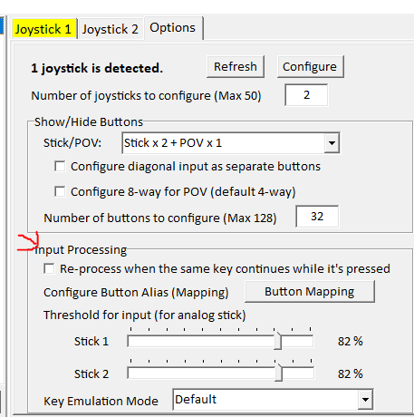

WARNING! Be sure you have done everything in the Opening PPD For The First Time guide before proceeding.
There are various ways to set up a controller for PPD. This megathread will start by showing you our preferred method: downloading and configuring AntiMicroX with a DS4 controller (AKA: a PS4 controller).
This preferred method will allow you to optimize your controller inputs (use sticks, left d-pad, right d-pad, square, circle, L1 and R1 buttons for sliders).
- Option 1: AntiMicroX with a DS4 Controller -
Make sure PPD is closed before opening AntiMicroX. Once you have finished setting up AntiMicroX, then you can open PPD.
1. Click here to go to the github page for AntiMicroX. Scroll to the bottom where it says 'Assets,' then click to download the version that matches your computer's operating system. (For the most common Windows user, that would be 'antimicrox-3.5.1-Windows-AMD64.')
2. Once you have AntiMicroX downloaded, run the .exe as Administrator (hover over the AntiMicroX app icon, right-click, then click 'Run as Administrator.').
3. Click here to download the amazing awesome PPD Discord server owners' (and one of the creators of this websites') controls. Yes, it'll look like a bunch of code, but just press the 'Download' button at the top right and download it.
4. On AntiMicroX, press the 'load' button, then select the controls config you just downloaded. This will load up the correct controls automatically!
5. Play PPD with AntiMicroX running at the same time. You may need to navigate to the Assign Key/Button screen in PPD again and map the controls you're using on your controller. To do this, click the 'change' buttons on each section and then click the corresponding button on your controller.
WARNING! Be sure you have the 'CSInput' mod enabled if you're playing with a controller! Otherwise, your d-pad will not register the right keys when playing a song. If you don't have the CSInput mod, you can download it along with all other necessary/highly recommended mods here. After you have downloaded and extracted these mods, place them into the 'mods' folder in your main 'PPD' folder (which is inside the 'KHC' folder). To enable these mods, press square while on the song selection screen in-game, scroll to 'mods,' and press circle to checkmark all of them before playing (but after you have set up your controller)! See Downloading Necessary Mods if you are still confused.
- Option 2: JoyToKey -
JoyToKey is another program that allows controllers to emulate keyboard inputs. Make sure PPD is closed before opening JoyToKey. Once you have finished setting up JoyToKey, then you can open PPD.
1. Click here to be taken to the JoyToKey download page.
2. Scroll down to the 'Download the Latest Version' section and click 'Download JoyToKey installer (from joytokey.net).'
3. Run the installer and open the JoyToKey application.
4. Plug your controller into your PC. Then, create a new JoyToKey profile and call it 'PPD.'
Any controller connected will highlight the Joystick profiles yellow or green.
Any button inputs on the controller will highlight the corresponding button on JoyToKey the same color.
5. Change whatever button is pressed to the same key set in the ingame PPD keyboard controls.
The recommended key binds for Left and Right stick would be left stick left = L, left stick right = R while right stick left = square, right stick right = circle.
To adjust analog stick sensitivity, go to options and go down to input processing. The higher the percentage, the lesser the sensitivity.
IMPORTANT NOTE ABOUT JOYTOKEY:
JoyToKey is unable to emulate hold transfers, nor is it able to recognize multiple inputs of the same key binding. For example if square is bound to H on the keyboard and R2 has HJKU as a quad macro, if you were holding down square and tried to switch to R2 for holds, the hold will break. Additionally, if you were to hold down square, and press R2 for a multi note, the note would miss because the program thinks the square key was already being pressed.
- Controller Setup Video Guides -
Option 1: AutoHotKey
This option provides the controls most similar to Project Diva: Future Tone.
This video guide was made by the epic PalmTree Freak (PPD's #1 Dad). Thank you, Palm!
Option 2: Steam Big Picture Mode
This video guide was made by the one and only Cyan Dreams (PPD's #1 Touhou Enjoyer). Thank you, Cyan!
Continue to Making an Account